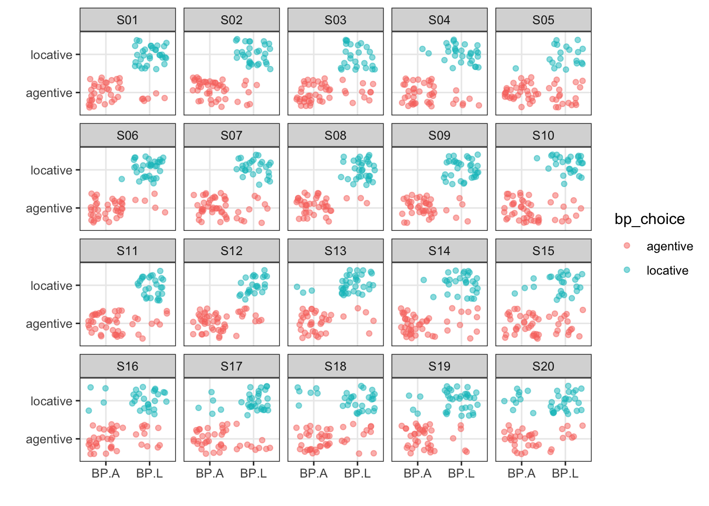
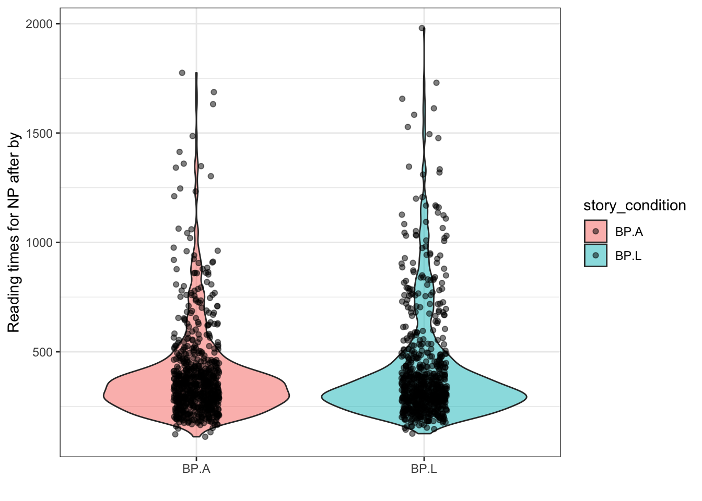

Let’s work on cleaning some more real data from a project currently being conducted by Stephen and Victoria.
library(tidyverse)In this study, participants read short stories, word-by-word,. The
stories tested whether people attributed AGENTIVE or LOCATIVE meanings
to the preposition by. We used past-tense passivised verbs
to test this.
There are two formats for the stories:
PERSON_A was with PERSON_ B, when PERSON_C appeared.
1a. BP.A condition: PERSON_A was verbed by PERSON_C (agent)
1b. BP.L condition: PERSON_A was verbed by PERSON_B (locative)
PERSON_A was with OBJECT_B, when PERSON_C verbed.
2a. BP.A OBJECT_B was verbed by PERSON_A (locative)
2b. BP.L OBJECT_B was verbed by PERSON_C (agentive)
After each story, participants were asked:
Q. WHO VERBED PERSON_A / OBJECT_B?
1. PERSON_C 2. PERSON_B / PERSON_AFor each person, we need to calculate
byLoad in the data from here
by_raw <- read_csv('https://www.stephenskalicky.com/r_data/nes_byphrase_raw.csv')## Rows: 13527 Columns: 56
## ── Column specification ────────────────────────────────────────────
## Delimiter: ","
## chr (53): rt, button_pressed, PROLIFIC_PID, subject, sex, nes, att, trial_it...
## dbl (3): condition, trial_index, age
##
## ℹ Use `spec()` to retrieve the full column specification for this data.
## ℹ Specify the column types or set `show_col_types = FALSE` to quiet this message.by_trim from by_raw
which contains these columns:by_trim <- by_raw %>%
dplyr::select(subject, button_pressed, stim_id, story_condition, trial_item, button_cresp, comp_answer, button_order)story_condition. Filter the data so that it
only contains the two conditions we need. Name your new object
by_trim01summary(as.factor(by_trim$story_condition))## BP.A BP.L L PRAC T NA's
## 2940 2940 2940 1764 2940 3by_trim01 <- by_trim %>%
dplyr::filter(story_condition == 'BP.L' | story_condition == 'BP.A')
# str_detect()
# by_trim[grep("BP", by_trim$story_condition),]trial_item. Filter the data so that it only
contains the comprehension question asking who the agent is. Name your
new object by_trim02.summary(as.factor(by_trim01$trial_item))## agent_question location_question story temporal_question
## 1470 1470 1470 1470by_trim02 <- by_trim01 %>%
dplyr::filter(trial_item == 'agent_question')
# by_trim02 <- by_trim01[grep("agent_question", by_trim01$trial_item),]summary(as.factor(by_trim02$button_cresp))## AL LA
## 742 728summary(as.factor(by_trim02$button_pressed))## 0 1
## 757 713by_trim03. Create a new column
bp_choice which has a value of agentive or
locative, depending on how the participant answered the
agentive question.by_trim03 <- by_trim02 %>%
dplyr::mutate(bp_choice = case_when(button_cresp == 'AL' & button_pressed == 0 ~ 'agentive',
button_cresp == 'LA' & button_pressed == 1 ~ 'agentive',
button_cresp == 'AL' & button_pressed == 1 ~ 'locative',
button_cresp == 'LA' & button_pressed == 0 ~ 'locative'))by_trim03:summary(as.factor(by_trim03$stim_id))## S01 S02 S03 S04 S05 S06 S07 S08 S09 S10 S11 S12 S13 S14 S15 S16 S17 S18 S19 S20
## 73 75 74 72 73 75 74 72 73 75 74 72 73 75 74 72 73 75 74 72# x = story_condition
# y = bp_choice
# data = by_trim03
ggplot(data = by_trim03, aes(x = story_condition, y = bp_choice, color = bp_choice)) +
facet_wrap(. ~ stim_id) +
labs(x = '', y = '') +
#geom_point()
#geom_point(position = 'jitter')
geom_jitter(alpha = .5) +
theme_bw()
by_rt from
by_raw. Select the following columns and filter the data to
only inlcude the two values of story_condition we care
about.by_rt <- by_raw %>%
dplyr::select(subject, stim_id, story_condition, rt30, rt31, rt32) %>%
dplyr::filter(story_condition == 'BP.L' | story_condition == 'BP.A')by_rt01 <- by_rt %>%
dplyr::filter(rt30 != '"')1. in each story, the 30th word was `by` (rt30)
2. for stim id 1-12, `rt31` = `the`, `rt32` = `noun` (e.g., 'the woman')
3. for stim id 13-20, rt31 = NPafter_by which contains the RT
for the NP immediately after by, with the following
contraints. Name your new object by_rt021. in each story, the 30th word was `by` (rt30)
2. for stim id 1-12, `rt31` = `the`, `rt32` = `noun` (e.g., 'the woman')
3. for stim id 13-20, rt31 = NPYour after_by variable should be set to the value of
rt31 for stim_id 13:20 and to the mean of rt31
and rt32 for stim_id 1:12. Make sure you convert
rt30, rt31, and rt32 to numeric. Don’t use
mean().
Filter after_by to only contains values < 2000.
# there are smarter ways to do it - this is quite lazy
object_stories = c('S13', 'S14', 'S15', 'S16', 'S17', 'S18', 'S19', 'S20')
by_rt02 <- by_rt01 %>%
mutate_at(vars(rt30, rt31, rt32), as.numeric) %>%
filter(as.numeric(rt31) < 2000) %>%
filter(as.numeric(rt32) < 2000) %>%
dplyr::mutate(after_by = if_else(stim_id %in% object_stories, as.numeric(rt31), ((as.numeric(rt31)+as.numeric(rt32))/2))) ggplot(by_rt02, aes(x = story_condition, y = after_by, fill = story_condition)) +
geom_violin(alpha = .5) +
geom_jitter(alpha = .5, width = .1) +
labs(x = '' , y = 'Reading times for NP after by') +
theme_bw()
by?by causes the least confusion among
nes?